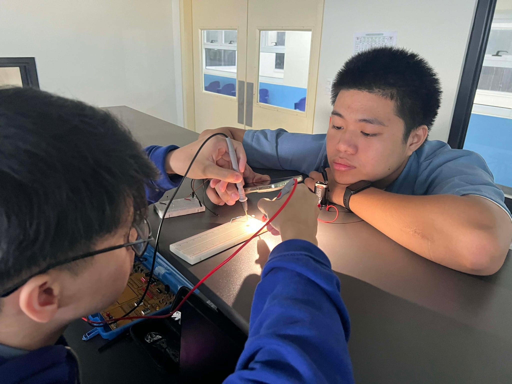

Circuit
Electronics · Laboratory
From schematic
to working circuit.
Hands-on circuit construction, measurement, troubleshooting, and validation using breadboards, test instruments, and simulation tools.
View Project →